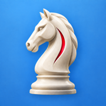

Your iPhone home-screen icon
The approved knight design for Stockfish AI Chess.
9:41••• ▰
Illustrative home screen. Physical size depends on your monitor and zoom.
Stockfish AI Chess
A white knight, a blue accent, and a lighter sky blue background.

Small-size preview